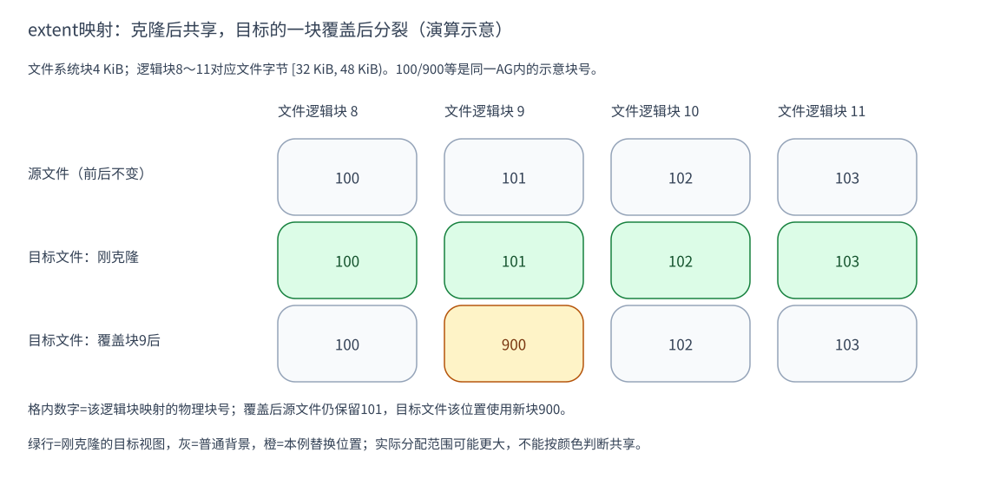

理解 XFS：extent、reflink 与 FICLONE 怎样完成文件克隆
文件系统把程序看到的字节序列，组织成设备上的数据块和管理这些块的元数据。 XFS 使用 extent 记录区间映射，用分配组组织空间，并用日志维护元数据事务。 在启用 reflink 的文件系统中，两个文件还可以共享数据块，而保留独立的内容视图。
本文先建立 XFS 的文件、映射和空间管理模型，再解释共享引用与写时复制， 随后把 FICLONE 调用放进这套模型。最后用一个四块区间演算克隆和覆盖，联系 CubeSandbox 内存卷。reflink 是文件块共享机制，不是整文件系统快照或 RAM 克隆。
| 分析对象 | 固定版本与源码 | 用途 |
|---|---|---|
| Linux | v6.6@ffc253263a13 | 系统机制与接口 |
| CubeSandbox | v0.7.1@31d911e430fd | VMM/存储调用实例 |
这是源码解析，不是本机内核、文件系统参数或运行效果的验证。
1. XFS 的基本组织：文件身份、数据映射与空间管理
文件数据与描述数据的元数据
程序按文件偏移读写字节，设备按块保存内容。两者之间需要映射：文件的某段 字节存在哪里、哪些空间还未分配、哪些块被多个文件引用。这些信息属于元数据， 与应用实际写入的文件数据不同。reflink 的关键就是改变映射和引用，而不是 先复制所有文件数据。
文件名是目录中的入口，inode 保存文件元数据及数据映射。两个文件可以有 不同 inode，却让部分数据块共享；hardlink 则是多个名字指向同一 inode。 因此，“两个文件读起来一样”和“它们是不是同一个文件”是不同的问题。
inode 的 data fork 保存文件数据的映射信息，映射可用 extent 记录或 B+tree 等形式组织。fork 在这里表示 inode 内的一类结构，不是创建进程。 文件内容不必全都连续放在设备上：不同文件区间可以由不同 extent 承接。 E1、E5
XFS 还把物理空间划分为 Allocation Group（AG，分配组）。文件映射从文件一侧 回答“这个偏移在哪里”；AG 内的空间管理和元数据树则从存储一侧管理分配与 引用。AG 不是目录层级，也不是一个快照版本，一个文件区间的映射需要与这些 空间信息配合。E1
日志解决元数据事务，不代替应用保存协议
XFS 的元数据日志记录需要恢复的管理信息；延迟分配允许部分写入在更晚阶段 确定实际存储位置。因此，文件逻辑长度、已分配空间和已持久化的数据是不同 概念。理解这一区别，才能判断“文件已创建”或“克隆已返回”究竟完成了什么。 E5、E6
日志并不会替应用把 RAM、CPU 状态和其他文件组合成原子的 VM 快照。本文用 XFS 解释文件数据的共享与隔离，整份快照的保存和持久性仍需上层协议协调。
2. extent：把文件区间映射到物理块
一个 extent 的关键含义可以概括为：文件逻辑块起点、物理块起点、连续块数、 状态。代码的解码函数把磁盘记录还原成 br_startoff、br_startblock、 br_blockcount、br_state。它描述一段对应关系，并不是“一个内存页”。E2
一条 extent 合并描述连续的对应关系，不需要为每个字节单独建立记录。 随着分配、共享或覆盖发生变化，原来的区间可以分裂成几条记录；“文件还是 同一个文件”并不意味着其底层映射一直不变。
用四个块展开这条记录
设文件系统块大小为4 KiB。文件中的逻辑块8～11，即字节区间
[32 KiB, 48 KiB)，映射到同一个AG中的示意物理块100～103。
这可由一条“逻辑起点8、物理起点100、长度4”的记录表达。
本文只使用“源文件”和“目标文件”两个对象；8～11是文件逻辑块索引， 100～103、900是示意物理块号，不是 RAM 地址、PFN 或真实设备采样。 把块索引换成字节偏移时才乘4 KiB；实际系统还涉及AG编码和设备布局。
extent 状态也有意义：已写区域、已分配但尚未写入的区域和文件空洞，不能 只按“有没有块号”混看。稀疏文件的逻辑长度可以大于实际分配量。下面只追踪 一段已经写入数据的源 extent，避免把不同状态的处理混成同一条路径。
3. reflink：独立文件通过引用共享数据
reflink 克隆后，源和目标各自保留文件身份与逻辑映射，但相关映射可以指向 同一批物理数据块。目标因此立刻具有源文件的内容视图，而不必先重新写一遍 所有数据。这里的“共享”只描述块归属，不表示两个文件被合并成一个 inode。
共享信息由 refcount B+tree 等元数据管理，不能拿 inode 的硬链接数当共享 块引用数。普通共享记录通常只覆盖引用数大于1的区间；单独拥有的数据一般 不需要这种记录，CoW staging 还有专门的记录规则。E4
维持共享的另一个条件是写入隔离。任一文件修改仍被共享的区间时，不能直接 破坏其他文件需要的旧字节；文件系统必须准备独立存储，再切换修改方的映射。 所以 reflink 的两半机制是“克隆时增加共享引用”和“写入时分离受影响的引用”。 后文的 CoW fork 就用于组织后半段流程。E5
4. FICLONE 调用：从文件描述符到共享映射
系统调用与文件系统分派
调用形式是 ioctl(dst_fd, FICLONE, src_fd)：在目标文件描述符上请求克隆，
把源描述符作为参数。FICLONE 表示整个文件；范围克隆另有接口。它复用的是
文件数据块，不会复制进程页表，也不会自动保存 VM 的 CPU/设备状态。
Linux 的 ioctl 入口取出源 FD，调用 vfs_clone_file_range。VFS 检查源与
目标是否属于同一文件系统、是否具备适当读写条件及 remap 操作，再交给
XFS 的 xfs_file_remap_range。XFS 会检查 reflink 特性和文件系统状态，
准备好范围后才开始 remap。E3
因此，跨文件系统或不支持该能力的路径可能失败；FICLONE 自身没有“失败就 自动完整复制”的承诺。CubeSandbox 的 helper 创建目标文件后发出 ioctl， 失败会清理该目标并返回错误。上层是否换策略由调用者决定。
将原理落到四块区间
对于已写 extent，xfs_reflink_remap_extent 为目标区间建立对应映射，并
增加物理区间的引用计数。图中第二行表示克隆完成：目标文件的逻辑块8～11也
指向100～103，源文件的映射保持原样。E4

图 1：每列固定一个文件逻辑块；格内数字是该位置映射的示意物理块号。橙色900 表示目标后来获得的新块。图没有按物理距离绘制，不能从颜色或格数测量实际占用。 证据：E2、E4、E5。 绿色行是“刚克隆的目标文件”这个比较阶段，灰色是普通背景，橙色只突出本例 替换的位置；不能把绿色或灰色当成文件系统里的共享状态位。
5. CoW 写入：准备新块、写入数据、切换映射
CoW fork 是写入过程的临时映射结构，data fork 则描述文件的数据映射。 把新块准备与最终映射切换分开，可以在新数据完成后替换目标区间，同时保留 其他文件对旧块的引用。它描述的是文件系统写入流程，不是用户进程的私有页。
目标文件改写逻辑块9时发生什么
假设目标文件改写逻辑块9。如果直接把新数据写到物理块101，源文件也会读到变化。
XFS 因此为需要分裂的范围准备新存储。示意中它分到物理块900：
目标映射可拆为 8→100、9→900、10～11→102～103，源文件仍指向100～103。
内核实现把新写入的准备放在 CoW fork：可以先做空间预留/延迟分配，再
获得实际块并提交I/O。等相应新数据写完，xfs_reflink_end_cow_extent 才移除
目标的旧 data-fork 映射、减少旧引用，把新映射移入 data fork，并清理临时映射。E5
这里“只换一个块”是演算结果之一，不是分配保证。实际CoW范围受对齐、分配、 碎片和 cow extent size hint 等因素影响，可能合并或扩大。RAM页大小、 XFS块大小、extent长度分别属于不同层次，不能互相直接换算。
6. 应用原理：CubeSandbox 内存卷与共享的边界
CubeSandbox 保存新内存镜像时，XfsCow/cubecow 先用FICLONE克隆配套基线， 得到完整的目标文件；VMM按选页结果覆盖其中的字节；XFS处理受影响共享块的 分裂。文件系统没有读guest脏页位图，VMM也没有直接指定“把这次写放到块900”。E6
删除一个源文件不会要求其他克隆文件逐层重放差分，但文件名、打开的FD、 文件映射、业务catalog和共享块引用各有生命周期。对CubeSandbox的具体 origin/sibling目录回收规则，见 XFS内存卷案例。
XFS日志主要保障元数据事务，不能单独证明多文件组成的VM快照已完整持久化。 本文没有运行FICLONE、格式化文件系统、验证崩溃恢复或测量磁盘/RAM节省比例。 不同inode共享磁盘块也不能据此推断它们的页缓存共享。
继续阅读：内存卷的具体保存链、 RAM私有CoW与恢复。
源码证据
E1 · 文件系统对象（Linux v6.6 local source fact）
E2 · extent字段（Linux v6.6 local source fact）
源/目标文件、块8～11与100/900为手工演算示意（inference）。
E3 · syscall到XFS（Linux v6.6 local source fact）
E4 · 映射与共享计数（Linux v6.6 local source fact）
E5 · CoW写入和完成（Linux v6.6 local source fact）
图中900是可能的分配示意，不是源码固定选择。